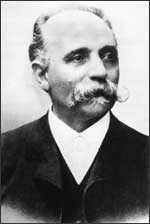

Camillo Golgi
1843–1926
Camillo Golgi was an Italian physician, cytologist (a person who studies the structure of cells), and professor. His work studying cell structure had a great impact on medical research. He converted a small kitchen in a hospital where he worked into a laboratory. There he investigated the structure and function of nerve tissue. Golgi devised new methods of staining nerve tissue that allowed him to see nerve cells more distinctly and to discover the organelle now called the Golgi apparatus. In 1906, Golgi and another researcher, Santiago Ramón y Cajal, shared the Nobel prize for their work on the structure of the nervous system.
Among Golgi's many contributions to medicine, his research on malaria was particularly significant. Malaria is a potentially deadly disease caused by a single-celled parasite that infects human red blood cells. Golgi demonstrated that malaria is caused by different species of the parasite and that the release of the parasite's spores from infected red blood cells causes fever.